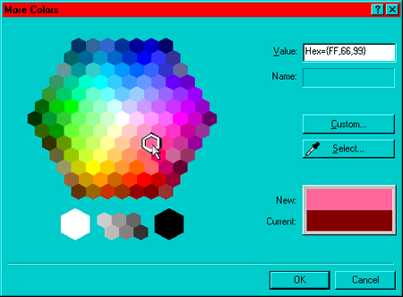

font color=""#BruceWillis"" Распрзнается как шестеричная система RGB. Пропускаемые цифры распознаются как 0. Некорректные символы распознаются как 0.
Если применить эти правила, то получим следующее:
Ограничение в 216 цветов, которые гарантированно будут отображены браузером без искажений, исходит из того, что некоторые (теперь уже, слава богу, именно "некоторые") компьютеры способны отображать только 256 цветов. Часть из них используется для системной палитры (к примеру для окон). Так что для Web'a остается только 216. Сейчас использование безопасной палитры не является необходимым условием для создания сайта. Хотя сайты, заботящиеся обо всех своих посетителях, или, по крайней мере, о подавляющем их большинстве, придерживаются безопасных цветов (web-safe colors, browser-safe palette). Правда, уменьшение их количества приводит также и к уменьшению размера графики, что тоже немаловажно.
Правило для получения безопасных цветов очень простое. Допустимые значения для красного, зеленого и синего (RGB: red, green, blue) в шестнадцатиричной системе следующие:
т.е. обозначение цвета для браузера будут выглядеть, например, так:
Для простоты и удобства во многих программах существуют специальные опции или палитры.
FrontPage 2000 предоставляет такую палитру безопасных цветов:
Когда компьютер не способен отобразить какой-либо цвет, он пытается имитировать его с помощью смешения (dithering). Т.е. он смешивает доступные ему цвета в нужной пропорции. Однако результат будет далек от идеального, и при близком рассмотрении такая картинка выглядит зернистой. Особенно это заметно на цветовых растяжках. Так что при использовании смешения градиенты противопоказаны. Если вы используете только цвета из безопасной палитры, то они не будут подвергнуты смешению, и вы можете быть уверены, что сделанная вами страница, на чужом мониторе будет смотреться, как на вашем (если не принимать во внимание особенности цветопередачи разных мониторов).
Выводы